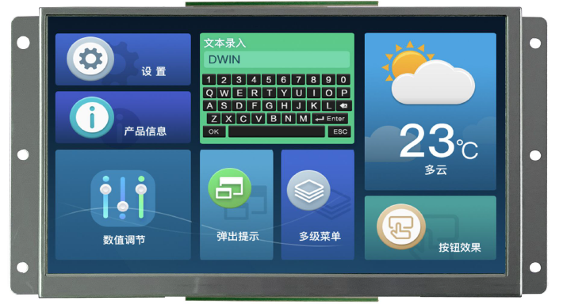
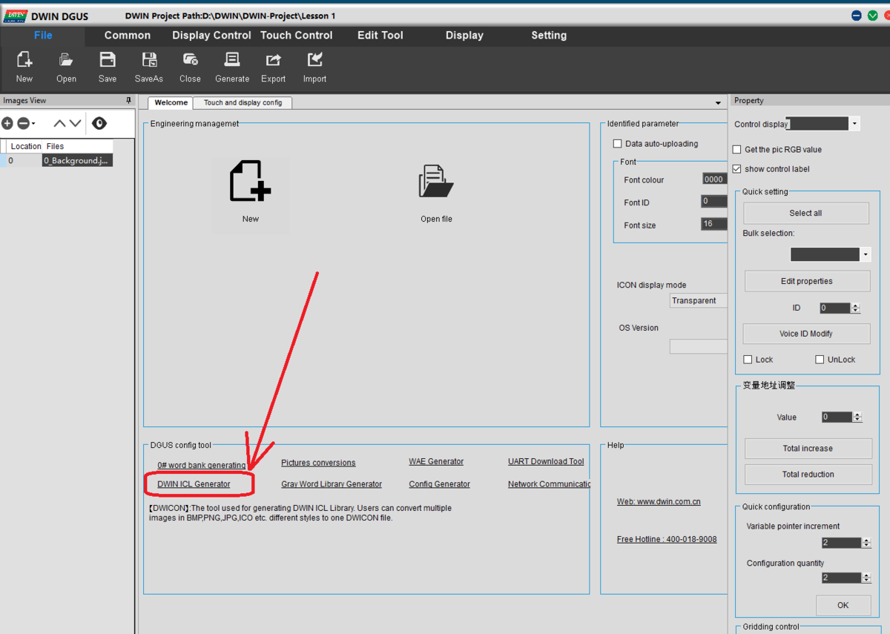
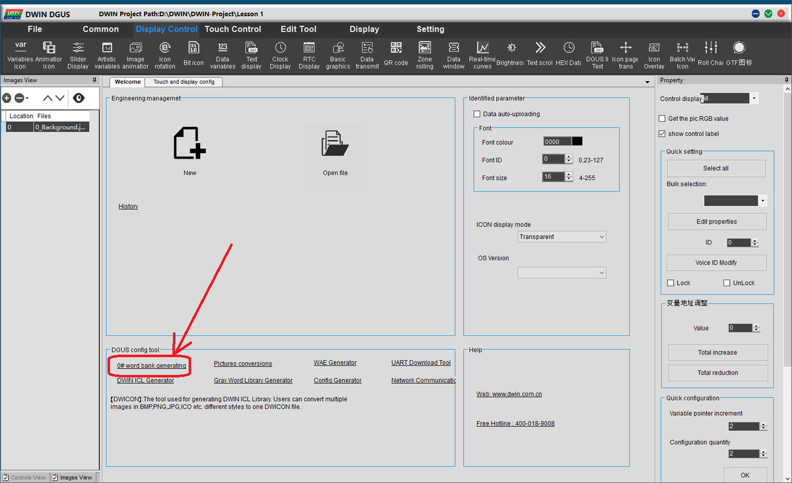
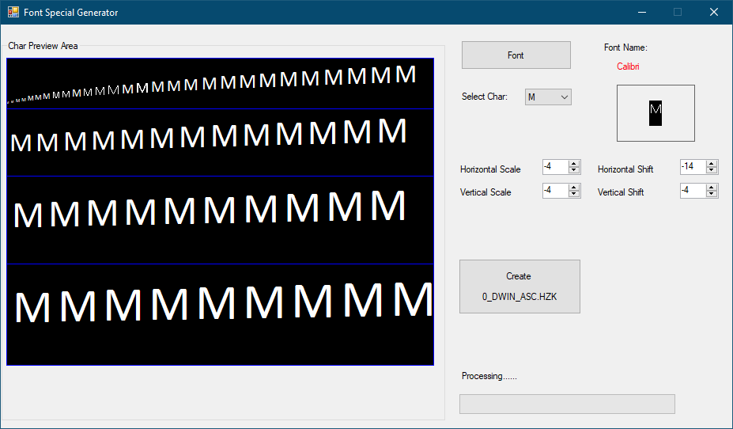
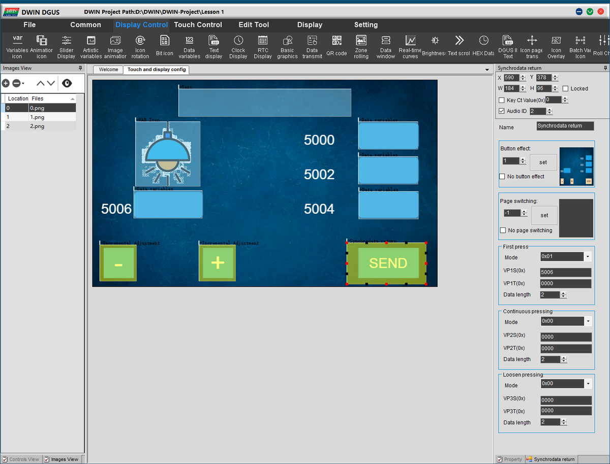
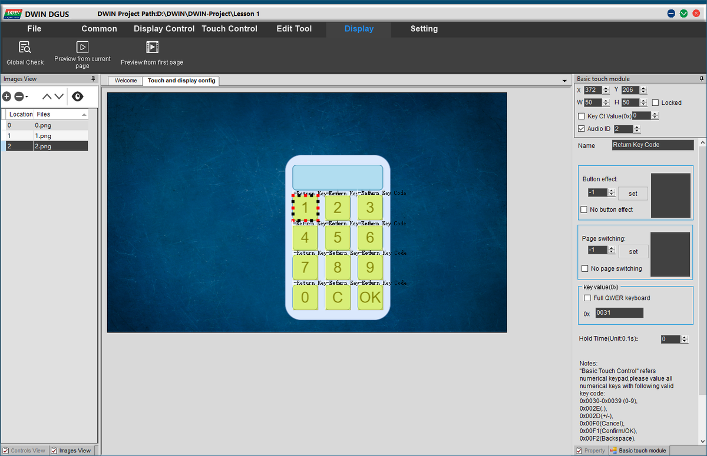

DWIN. Знакомство с программным обеспечением DWIN Graphic Utilized Software. Hello World
15 минут
3780 прочтений
25 ноября 2021
В данной статье поработаем с программным обеспечение DGUS (DWIN Graphic Utilized Software). Познакомимся с некоторыми элементами программы, ознакомимся с протоколом передачи данных с дисплея и создадим первый проект "HELLO WORLD".
Прошлые статьи:
DWIN человеко-машинный интерфейс. Введение
DWIN. Подготовка дисплея к работе и загрузка демо-проекта
Продолжаем работать с дисплеем DMG80480Y070_01NR с TN матрицей, разрешением экрана 800 на 480 точек и резистивной сенсорной панелью.

Дисплей DMG80480Y070_01NR вид спереди
Далее рассмотрим программу DGUS (сокращение от DWIN Graphic Utilized Software) и основные формируемые файлы для работы. Ниже представлена краткая диаграмма разработки ПО.
С системой на кристалле T5L можно работать напрямую, программируя ядро, например, через Keil и с помощью программы DGUS через визуальный интерфейс. В программу DGUS загружаются изображения, иконки, аудиофайлы, шрифты. Далее при работе формируются взаимодействия элементов дисплея, элементов сенсорной панели, размечается область памяти для переменных. После загрузки файлов на дисплей происходит взаимодействие через графический интерфейс и через асинхронный порт UART (TTL/RS232/RS485).
Диаграмма разработки ПО
Для того чтобы понять как работать с программой напишем "Hello World". В него будет включена работа с переменными, элементами управления, формированием клавиатуры для ввода цифр, приемом и отправкой данных через UART на компьютер и выводом полученной информации на дисплее.
Для начала необходимо скачать саму программу DGUS, сделать это можно по ссылке на GitHub, далее во всех статьях будет по умолчанию использоваться расположение программы и проекта в директории "D:\DWIN\DWIN-Project" программа DGUS будет располагаться по пути "D:\DWIN\DWIN-Project\DGUS_V7624".
Необходимо запустить программу DGUS, нажать на значок New, в появившемся окне выбрать разрешение экрана 800х480 и папку где будет храниться проект в данном случае "D:\DWIN\DWIN-Project\Lesson 1".

Меню программы DGUS
Если интерфейс программы на китайском языке необходимо перейти в последнюю вкладу и поле "Language" выбрать "English".

Меню программы DGUS
Воспользуемся бесплатным стоком изображений freepik для поиска фона и иконок. Фоновое изображение сохраняем в папке \DWIN_SET (фоновые изображения лучше сохранять с цифирным обозначением в начале названия, например, 0_fon.png), иконки в папке \Icon.
Далее переходим во вкладку "Touch and display config" нажимаем на плюс, переходим в папку \DWIN_SET и добавляем три фоновых изображения.
Формируем фоновый файл для дисплея, для этого переходим на вкладку "Welcome" и нажимаем на пункт DWIN ICL Generator.

Меню программы DGUS
Открывается окно формирования ICL файла.
1. Выбираем директорию где сохранены изображения в нашем случае \DWIN_SET.
2. Выставляем качество изображения на 100%.
3. Выбираем пункт применить ко всем.
4. Проверяем чтобы на всех изображениях применились новые параметры.
5. Генерируем файл ICL в папку \DWIN_SET.
!ВАЖНО, файл фона должен начинаться с цифры 32(это связанно с архитектурой памяти). Можно оставить 32.ICL.
Генерация файла фоновых изображений
Разметка памяти дисплея
Точно также формируем файл иконок. Директория хранения изображений иконок будет \Icon. Генерируемый файл сохраняем в папку \DWIN_SET, но присваиваем имя 46.ICL.
Для формирования шрифта необходимо перейти на вкладку "Welcome" и в поле "DGUS config tool" нажать "0# word bank generating".

Включение генерации шрифтов
Откроется окно генерации шрифта. Нажатием на кнопку "Font" выбираем подходящий шрифт и выставляем параметры так, чтобы все буквы не были срезаны, отследить это можно в левой половине окна. Далее нажатием на кнопку "Create 0_DWIN_ASC.HZK" формируем файл шрифта. Файл генерируется в корневой папке программы DGUS(DWIN-Project\DGUS_V7624), его необходимо перенести в папку Lesson1\DWIN_SET.

Окно генерации шрифта
Откроем вкладку "Touch and display config", в верхнем выберем пункт "Text Display". В правой стороне появится окно редактирования элемента. В первых двух строчках устанавливается положение верхней левой точки, и размер окна.

Добавление элемента "text display"
Устанавливаем значение на X = 200, Y = 21, W =400, H = 64.
Далее идут такие элементы как:
"Name" название элемента;
"SP" указатель описания элемента, в данной статье не будем его затрагивать;
"VP" адрес памяти начала элемента (адреса с 0x0000 по 0x0FFF используются системой, 0x1000-0x4FFF используется для вывода графиков, 0x5000-0xFFFF отведено для пользователя);
Адресное пространство переменных
"Encoding Mode" режим декодирования, выставляем 0x01 для правильного отображения информации;
"Automatic character spacing adjustment" ставим галочку для автоматического выравнивания межсимвольного расстояния;
"Text Length" количество символов надписи. Надпись будет состоять из 11 символов "HELLO WORLD", что и указываем в этом поле.
FONT0_ID выбор банка шрифтов, оставляем 0;
Следующие два поля отвечают за размер букв, стоит соблюдать отношение 1:2.
Далее идут поля отвечающие за горизонтальный и вертикальный интервалы между букв, так как мы выставили галочку на автоматическое выравнивание, то эти поля не задействуются.
И наконец в последнем поле вводится сама надпись "HELLO WORLD".
FONTДобавление элементов "Data variables display"
Добавим поля отображения переменных. Переменных будет 4, для них на фоновом изображении отведены места и указаны области памяти в которые мы и будем их записывать. Переменные обозначим типом INT(16 бит) который занимает по 2 байта информации. Поэтому адреса переменных будут 5000, 5002, 5004 и 5006.
Для добавления элемента в верхнем меню выбираем иконку "Data variables" и размещаем на отведенных областях фона. Окно редактирования элемента содержит поля:
"Name" название элемента;
SP" указатель описания элемента, в данной статье не будем его затрагивать;
"VP" адрес памяти для переменной;
"Show Colour" для выбора цвета цифры;
"Word Bank ID" выбор шрифта, это поле оставляем 0;
"Font size" установка размера шрифта;
"Alignment" выравнивание, можно установить по левому краю, по правому краю и по центру;
"Automatic character spacing adjustment" автоматическое выставления межсимвольного расстояния;
"Display invalid zero" показывает незначащие нули;
"Variable type" позволяет выбрать несколько вариантов типов переменных, если переменные будут не 2 байта необходимо учесть это в разметки памяти. В данной случае тип остаётся int (2 bytes);
"Integer digits" количество цифр;
"Decimal digit" количество цифр после запятой;
"Variable unit length" длина названия единиц изменения;
"Show unit" названия единиц измерения;
"Initial value" начальное значение переменной.
Установим "Initial value" для переменной по адресу 5000 - 0, 5002 - 100, 5004 - 100, 5006 - 50.

Добавление элемента "variables Icon"
Раз уже сформировали файл иконок то добавим и их. Для добавления в меню сверху выбираем "variables Icon". Рассмотрим какие параметры у этого элемента:
"Name" название элемента;
"SP" указатель описания элемента, в данной статье не будем его затрагивать;
"VP"адрес памяти для переменной относительно которой будет изменяться иконка;
"Icon file" файл в котором находятся изображения иконок, был создан файл 46.icl, его и указываем;
"Minimum" минимальное значение переменной;
"Icon ID" ID иконки отображаемой при достижении минимального значения переменной;
"Maximum" максимальное значение переменной;
"Icon ID" ID иконки отображаемой при достижении максимального значения переменной;
"Display mode" режим отображения, прозрачный фон или фон изображения;
"Filter Set" Значение фильтра в режиме прозрачности;
"Initial value"начальное значение переменной;
"Background transparent Mode" режим прозрачности.
Выставим адрес переменной VP 5006, поле Minimum - 50, Maximum - 101,Initial value 50, Icon ID минимального значения выставим 0, максимального 1. В файле иконок присутствует только одна иконка с номером 0, она и будет отображаться на дисплее.

Добавление элемента "Incremental Adjustment"
Добавим два элемент "Incremental Adjustment" для изменения переменной. Для этого в верхнем меню переходим на вкладку "Touch Control" выбираем соответствующий элемент.
Настройка элемента содержит:
Позицию элемента и его геометрические размеры;
"Key Ct Value" значение кнопки - оставляем 0;
"Audio ID" если установить галочку активируется возможность воспроизведения звука при касании;
"Name" название элемента;
"Data auto-uploading" автоматическая отправка данных при нажатии;
"Button effect" действие при нажатии;
"VP"адрес памяти для переменной над которой будет произведена операция;
Выбор типа переменной;
"Adjust method" приращение или уменьшение переменной;
"Over limith Operation" действие при достижении лимита. Два варианта: остановиться (STOP) или продолжать действие циклически(Cycle);
"Adjusting step length" шаг операции;
"Lower limit" нижний лимит;
"Upper limit" верхний лимит;
"Touch effect" эффект при прикосновении, два варианта: Constant постоянное приращение или вычитание и Disposable одноразовое приращение или вычитание;
Один из созданных элементов будет осуществлять приращение переменной 5006, второй элемент будет уменьшать переменную. Выставим пределы изменения переменной 0 и 100, шаг приращения 1, тип приращения Constant и остановку при достижении лимита. Также выставим действие при нажатии на смену фонового изображения на 1 и включим воспроизведение аудио №2. Установим расположение элементов на кнопке "-" и "+" соответственно.
Благодаря добавленным элементам можно изменять переменные на дисплее, но этого мало, и нужно вывести эти данные во внешний мир, сделаем это с помощью элемента "Synchrodata return" который позволяет отправлять данные через асинхронный порт. Добавить его можно через верхнее меню и вкладку "Touch Control" выбрав соответствующий элемент.

Добавление элемента "Synchrodata return"
Настройка элемента содержит:
Позицию элемента и его геометрические размеры.
"Key Ct Value" значение кнопки - оставляем 0;
"Audio ID" активация аудиофайла. Если установить галочку появится возможность воспроизведения звука при касании;
"Name" название элемента;
"Button effect" действие при нажатии;
"Page switching" переход на другую страницу при нажатии;
Далее идёт три настройки "First press" первое нажатие, "Continuous pressing" продолжительное нажатие и "Loosen pressing" завершение нажатия. Настройки содержат пункты:
"Mode" режим, 0x00 не задействуется, 0x01 активирован, остальные режимы не задействованы.
"VP*S" адрес считывания данных;
"VP*T" адрес записи данных;
"Data length" длинна переменной в байтах.
Создадим элемент с отображением 1 фона при нажатии, включим воспроизведение аудио №2, считыванием данных с переменной 5006 при первом касании и зададим расположение на кнопке "SEND".
Для переменной по адресу 5000 сделаем ввод значения с клавиатуры. Чтобы это сделать необходимо создать клавиатуру. Для неё выделен отдельный фон под номером 2. Перейдём на него в меню слева.

Добавление клавиатуры
Каждой кнопке необходимо задать действие, в нашем случае это ввод цифры соответствующей цифре на изображении. Для этого в верхнем меню переходим на вкладку "Touch Control" и выбираем элемент "Basic touch module". Рассмотрим настройки этого модуля:
В первых строках настраивается положение модуля и его размеры, размеры кнопки равны 50х50, поэтому выставим данные параметры в поля W и H. Расположение кнопки выставим поверх соответствующего изображения;
"Name" название элемента;
"Button effect" действие при нажатии;
"Page switching" переход на другую страницу при нажатии;
"key value" значение передаваемое кнопкой при нажатии;
"Hold Time" время удержания необходимого для срабатывания.
В примечании ниже указано какие значения кнопок стоит выставлять для присвоения им действий.
значения 0x0030-0x0039 соответствуют цифрам от 0 до 9;
0x002E точка;
0x002D +/-;
0x00F0 отмена;
0x00F1 ввод;
0x00F2 стереть символ;
Соответственно этому примечанию заполняем полня Key Value.
Цифры от 0 до 9 значениями 0x0030-0x0039;
C 0x00F2;
OK 0x00F1.
Клавиатура готова, теперь нужно научиться её вызывать. Сделать это можно используя элемент "Variable data Input" найти его можно в верхнем меню в вкладке "Touch Control" нажав на элемент "Variable Input";


Настройки модуля:
Расположение и размер элемента;
"Key Ct Value" значение кнопки - оставляем 0;
"Audio ID" активация аудиофайла;
"Name" название элемента;
"Data auto-uploading" автоматическая отправка данных в порт;
"Button effect" действие при нажатии;
"Page switching" переход на другую страницу при нажатии;
"VP" адрес переменной в которую будет производиться запись;"
Variable type" позволяет выбрать несколько вариантов типов переменных; В данной случае тип Int соответствующий тип полю "Data variables" установленному ранее для переменной по адресу 5000;
"Integer digits" количество цифр;
"Decimal digit" количество цифр после запятой;
"Show location" область клавиатуры в которую будет совершаться ввод данных;
"Show Colour" для выбора цвета цифры;
"Font ID" выбор шрифта, это поле оставляем 0;
"Font size" установка размера шрифта;
"Cursor color" цвет курсора при вводе, есть два варианта "White"(белый) и "Black"(черный);
"Display Method" режим отображения вводимой информации "Show \*\" ввод звездочками или "Direct display" ввод цифр;
"Keyboard location" расположение клавиатуры на данном фоне "Current page" или на другой странице "Other page";
"Keyboard setting" настройка клавиатуры, после нажатия на кнопку откроется меню (изображения есть выше в галереи Настройка элемента "Variable data Input") в котором необходимо выбрать страницу с клавиатурой и выбрать второй фон, после чего нажать на кнопку "OK" откроется следующее меню в котором необходимы выделить область клавиатуры. Должны получиться координаты (значения могут +/- отличаться) x1 = 352, y1 = 121, x2 = 571, y2 = 461, после чего нажать "OK";
"Current page" номер выбранной страницы с клавиатурой;
"Keyboard area" область выбранной клавиатуры;
"Show location" область отображения клавиатуры на текущей странице, устанавливаем значения x = 350, y = 130;
"Background transparency" прозрачность фона, выставляем 0;
"Enabling limits" область ввода значений с клавиатуры, устанавливаем от 0 до 999;
"Loading data when input" при установке галочки происходит ввод данных из переменной;
"Data address" адрес переменной для отображения при включении клавиатуры;
"Download data" установка цвета кодом в десятичном формате, не используем оставляем 0.
Область "Show location" заполняется после установки клавиатуры через настройку "Keyboard setting". При нажатии на кнопку "Set" возле пункта "Show location" в появившемся окне ставим галочку возле пункта "Displayed Keyboard" и ставим точку в правой точке поля где должен совершаться ввод(последнее изображение в галерее Настройка элемента "Variable data Input").
Проект готов, переходим в верхнем меню во вкладку "File" ждем на пункт "Save" сохраняя проект и на кнопку "Generate" для генерации файлов в папку "DWIN_SET". В папке должны быть файлы:
0.png, 1.png, 2.png файлы фоновых изображений.
0_DWIN_ASC.HZK файл сгенерированного шрифта.
сгенерированные файлы 13TouchFile.bin, 14ShowFile.bin, 22_Config.bin, 32.icl, 46.icl.
Дополнительные файлы 40.wae звуковые дорожки и T5LCFG.CFG конфигурационный файл их можно скачать из репозитория GitHub.
Рассмотрим конфигурационный файл(CFG) через программу Notepad++ совместно с плагином HEX-Editor. Файл выглядит следующим образом:

Конфигурационный файл
Рассмотрим некоторые параметры которые нам могут понадобится в ближайшее время (Список всех параметров можно посмотреть в Application Development Guide скачать можно с GitHub).

Описание конфигурационного файла
Область с 0x00 по 0x04 не изменяется, фиксирована производителем, если её изменить можно закирпичить дисплей.
0x05 - 0x78 или 0111 1000 сопоставляя таблице выше получаем: 7 - 0 проверка CRC отсутствует, 6 - 1 используем музыкальный файл, 5 - 1 загружаем файл инициализации 22.bin, 4 - 1 автоматическое обновление переменных, 3 - 1 включение сенсорной панели, 2 - 0 управление режимом ожидания через сенсорную панель, 1,0 - 0 картинка на дисплее не повернута;
0x06 - 0x20 или 0010 0000 очистка памяти NAND Flash памяти;
0x07 - 0x28 или 40 позиция музыкального файла WAE;
0x08 - 0x20 или 32 позиция файла фоновых изображений;
0x09 - 0x28 или 40, параметр для расчёта скорости считывания сенсорной панели, рассчитывается по формуле 400Гц/установленное значение, получается 10 Гц;
0x0A,0x0B - 0x001C или 28 делитель скорости для асинхронного порта, данное число соответствует скорости 115200 бод, вычисляется данное значение из формулы 3225600/badurate например 3225600/115200 = 28;
0x0C - 0x64 или 100 значение яркости дисплея в нормальном режиме в %;
0x0D - 0x32 или 50 значение яркости дисплея в режиме ожидания в %;
0x0E,0x0F - 0x03E8 или 1000 время пробуждения после режима ожидания, единицы измерения 10мс;
Файл CFG рекомендуется записывать однократно, и не оставлять на постоянно основе в папке DWIN_SET.
Осталось понять в каком формате передаются данные, разобраться с этим поможет следующая таблица из официальной документации:

Нас интересует работа с 4 переменными по адресам 5000, 5002, 5004, и 5006.
Для считывания переменных нужно отправить команды:
5A A5 04 83 50 00 01
5A A5 04 83 50 02 01
5A A5 04 83 50 04 01
5A A5 04 83 50 06 01
В ответ должны прийти соответствующие пакеты (для примера опишем пакеты с заданными значениями по умолчанию):
5A A5 06 83 50 00 01 00 00 где 00 00 два байта переменной в HEX формате соответствуют значению 0 в десятичном виде;
5A A5 06 83 50 02 01 00 64 где 00 64 два байта переменной в HEX формате соответствуют значению 100 в десятичном виде;
5A A5 06 83 50 04 01 00 64 где 00 64 два байта переменной в HEX формате соответствуют значению 100 в десятичном виде;
5A A5 06 83 50 06 01 00 32 где 00 32 два байта переменной в HEX формате соответствуют значению 50 в десятичном виде;
Также у нас имеются два пакета формируемых на дисплее, это переменная по адресу 5000 и 5006.
При нажатии на кнопку SEND, будет приходить сообщение:
5A A5 06 83 50 06 01 00 32 где 00 32 два байта переменной в HEX формате соответствуют значению 50 в десятичном виде;
При вводе числа 222 в поле 5000 будет отправляться пакет:
5A A5 06 83 50 00 01 00 DE где 00 DE два байта переменной в HEX формате соответствуют значению 222 в десятичном виде;
Получать данные научились, теперь нужно изменять, для этого отправляем команды:
5A A5 05 82 50 00 00 02
5A A5 05 82 50 02 00 03
5A A5 05 82 50 04 00 04
5A A5 05 82 50 06 00 05
В ответ будет приходить подтверждение принятого пакета следующего вида:
5A A5 03 82 4F 4B;
Бонус, для изменения яркости подсветки можно записать данные по адресу 00 82:
5A A5 05 82 00 82 14 10 - где старший байт равным 14 в hex виде десятичного числа 20 которое означает 20% яркости в рабочем режиме, а младший байт равный 10 в hex виде десятичного числа 10, означает 10% яркости в режиме ожидания.
С теорией закончили переходим к практике. Для обмена данными с компьютером будет использована программа DockLight, которая может работать в бесплатном режиме без сохранения заданных команд.
Добавим в DockLight команды на чтение и запись.

Рабочее окно программы Docklight
Далее представлен листинг команд с демонстрации видео ниже.
Как можно заметить команды совпали с теми что указаны в документации.

25 ноября 2021
1:07
1,0×
В данной статье получилось сделать первую программу. В процессе ознакомились с элементами вывода текста, вывода переменных, блоком приращения переменной, блоком синхронизации данных, формированием клавиатуры и вводом с неё, автоматическим переключением иконок при изменении переменных и передачей данных по UART.
Ссылка на GitHub: https://github.com/VB-Radchenko/DWIN-Project/
По вопросам закупок, технической поддержкой и общим вопросам обращайтесь на электронную почту: Info_dwin@mail.ru
Скидочный купон для официального магазина AliExpress - DWVLPRO
#dwin #hmi #dgus #iot #diy #сенсорная панель
Реклама
Торговля валютой с Альфа Форекс
0% ввод/вывод, 41 валютная пара, торги от 0.01 лота! Зарабатывайте с Альфа Форекс
VPN от 99₽/мес. Установка за 1 клик!
Для всех устройств. YouTube без тормозов. Собственное приложение.
Умеешь устанавливать Linux? Пройди тест!
Знание Linux является одним из популярных требований при приеме на работу в IT.
Курсы Программирования на Python в Шахтах
Самое время учиться! Курс с упором на практику. 12 месяцев. Идет набор!
Доступный курс по нейросетям для продвинутых пенсионеров
Обучение 3дня по заработку на нейросетях даже в 50+. Успейте занять место за 0₽!
Китайские нейросети стали круче, чем ChatGPT? Проверим!
На бесплатном прямом эфире с разбором и тестированием DeepSeek-R1 и QWEN 2.5-Max